Mutant Bike Proving Grounds.
Mutant Bike Proving Grounds under the Cambie Bridge in Vancouver, part
of the 2008 Velomutations weekend.
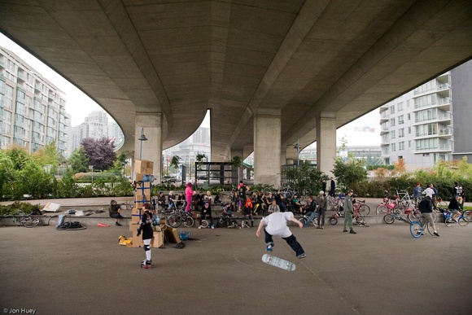
The main event, a combination of the familiar baby rescuing
competition and
bike bowling, was the "Castle Baby Rescue". Teams of two
cooperated. The first rider stormed the castle,
and the second tried to catch the baby.
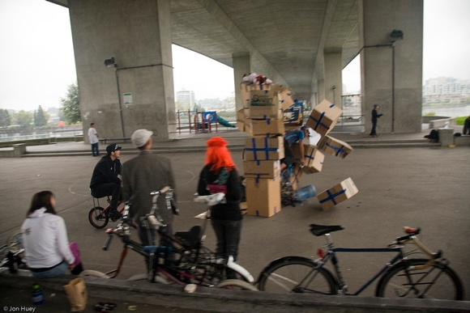
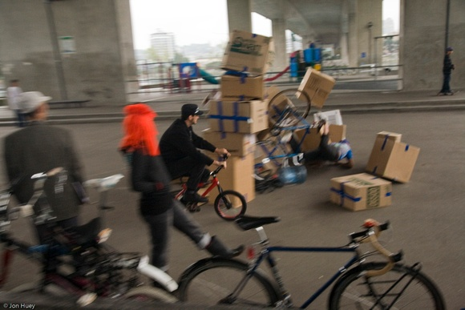
Not so many actual mutant bikes were used to compete. This isn't
Portland, you don't see one every day being ridden by someone you
don't know. It doesn't matter, though. The
most important skill for the mutant biker in the streets of today's
world is the ability to do things that nobody else understands and you
yourself may understand very little.
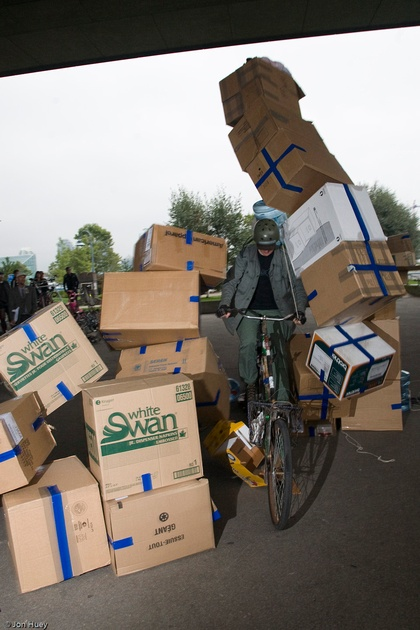
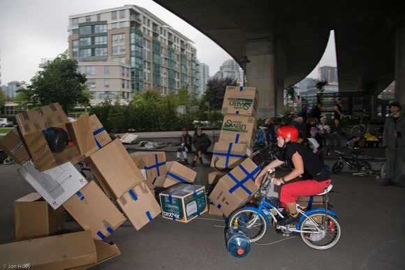
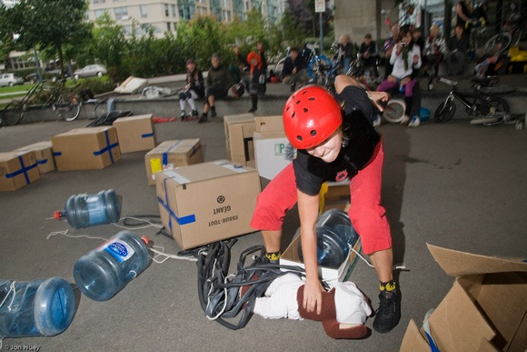
Building the castle was fun, too. I spent two weeks riding around in the
alleys of Chinatown looking for boxes; unlocked cardboard dumpsters are
hard to find in this town. I saw some fucked up shit.
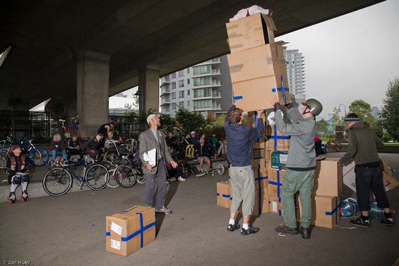
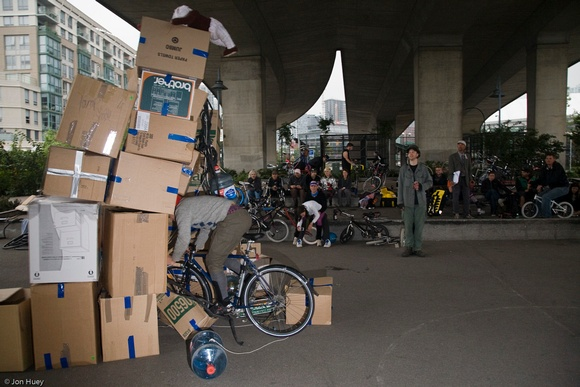
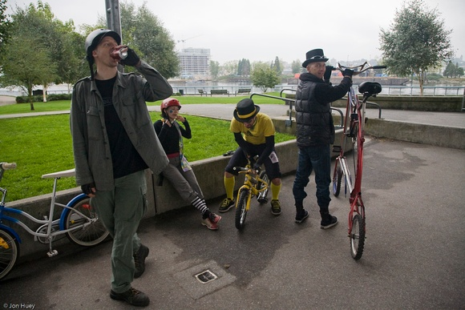
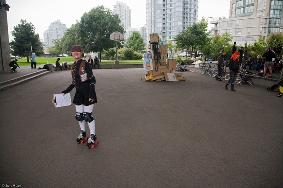
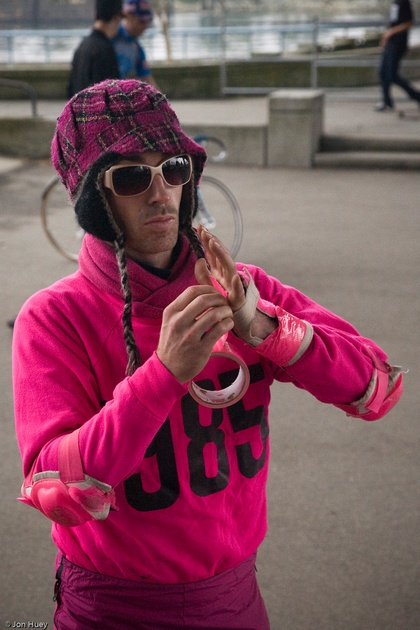
Of course, the clowns were some of the most skilled contestants.
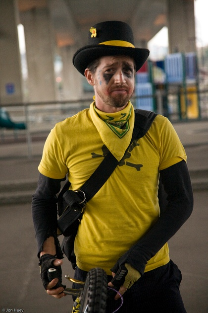
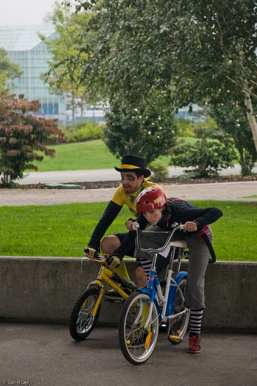
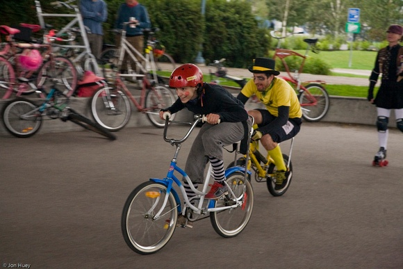
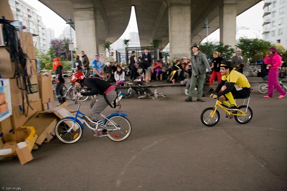
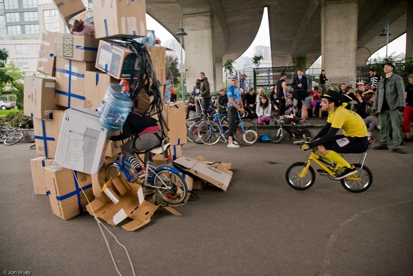
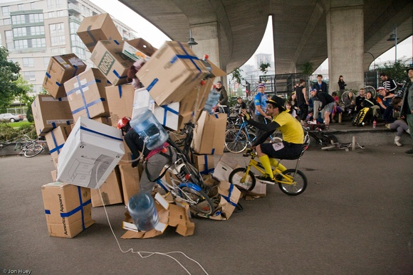
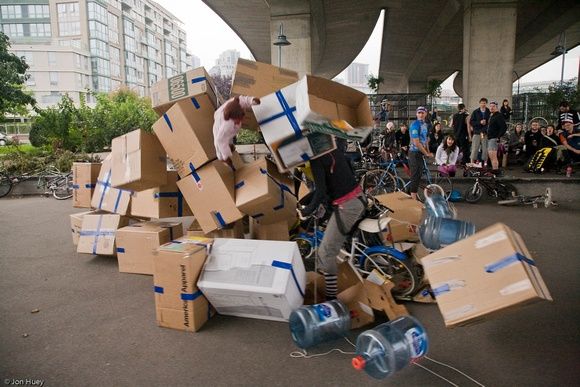
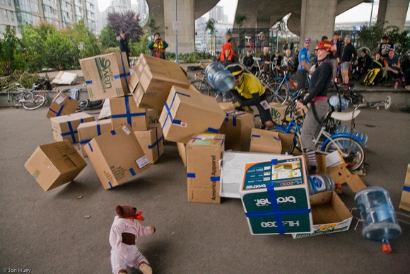
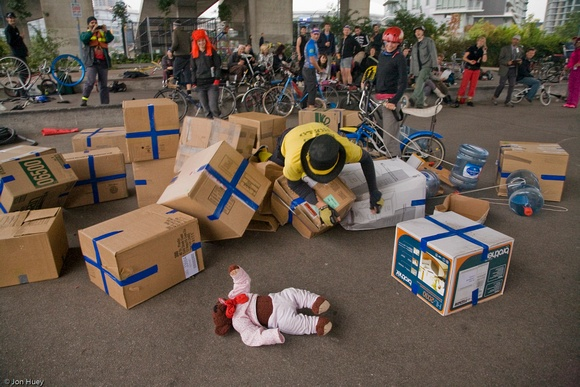
Catching the baby before it hit the ground was hard. You had to avoid
the exploding castle and your teammate. As in most mutant bike
sporting events, putting on a valiant effort was what mattered.
Babies are tough. If you make a good dive for them, they'll know that
they are loved.
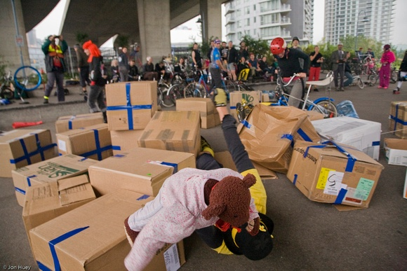
Thanks to F.B.B.B. for organizing Velomutations, Donald for bringing a
trailer full of choppers for people to ride, and Dan for hauling my
pile of trash.
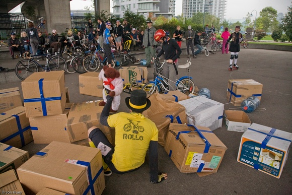
(Up to C.H.U.N.K. Operations)